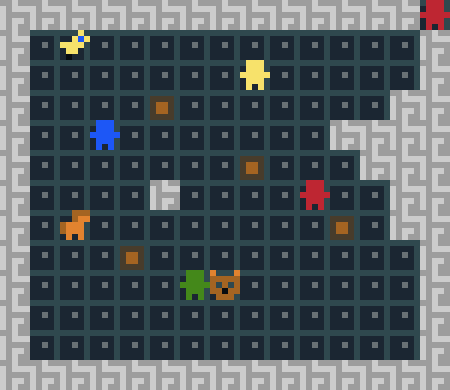

A 2 player stealth game made in 2 days for Mini ludum Dare 28, with the awesome puzzlescript engine.
Project page (link) Development blog

| A 2 player stealth game made in 2 days for Mini ludum Dare 28, with the awesome puzzlescript engine. Project page (link) Development blog |  |
| Game prototype made in a few days as a hiring test for Gameloft. Several constraints were imposed on the gameplay. Gravity-based gameplay "before it was cool" :). Project page (link) |  |